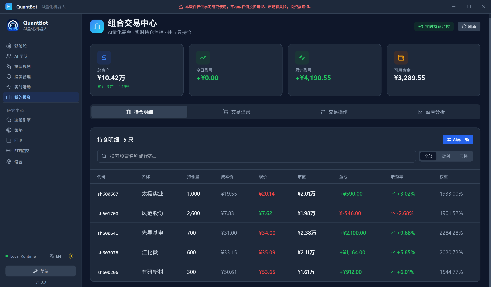

第二十九章我的投资：持仓、成交与“以数据库为准”的盈亏
29.1差了三块五
九月十一日收盘后，我做了件很无聊的事：打开行情软件，把手里几只票的收盘价乘上数量，加了一遍；再把现金加进去，减掉前一天的总资产。 我算出来的今日亏损是 \(312.4\) 元。 软件上写的是 \(315.9\) 元。 差了 \(3.5\) 元。 我第一反应是“软件算错了”。第二反应是“我算错了”。来回核对了三遍之后我才明白：两个数都没错，是我们算的不是同一件事。我算的是“价格变动”，软件算的是“权益变动”——中间隔着一层我完全没想起来的东西：今天有一笔卖出，而卖出要交印花税和佣金。 那 \(3.5\) 元，正好是那笔卖出的费用。 这一章讲的就是这本账：持仓是什么、成交是什么、盈亏是怎么算出来的，以及为什么系统的口径是“以数据库为准”，而不是“以我脑子里的算术为准”。29.2记账本的三样东西
一个家庭记账，本子上其实只有三样东西：
余额——你现在手里有多少钱、有多少存货（这是持仓）；
流水——每一笔进出（这是成交记录）；
结账——每天（或每月）把当时的值固定下来，写一行“截至今日”（这是快照）。
结账那一步最容易被人忽略，但它才是三样里最重要的一样。因为没有它，你三个月后翻开本子，只能看到一堆流水，得从头重算一遍才知道当时有多少钱。
一个常见的错法是：把“余额”当成可以随时手算的东西。它不能——余额只在你结账的那一刻被固定下来；在那之后，它由“最近一次结账 + 之后的所有流水”决定。
| 记账本上的东西 | 系统里的落点 | 它回答什么问题 |
| 余额（持仓） | position_snapshots 的最近一条收盘快照 | 那天收盘时，我手里有什么 |
| 流水（成交） | 交易记录表 | 每一笔买卖：方向、数量、价格、费用 |
| 结账（每日结算） | portfolio_daily_stats | 那天收盘时，总资产、累计盈亏、今日盈亏是多少 |
系统源码 internal/portfolio/engine.go 的 RecordDailySnapshot；系统事实清单第 12、13 节；核对时间 2026-09-24。
29.3持仓明细：八列
持仓表从左到右一共八列，每一列都有它防的那种错：| 列 | 为什么要有它 |
| 代码 / 名称 | 名称缺失时会退化为代码占位（事故 #14 的教训：不要用代码冒充名称） |
| 持仓量 | 整手归一化之后的实际持股数（A 股必须凑 100 股的整数倍） |
| 现价 | 来自实时刷新；刷新间隔在设置页里可改 |
| 成本 | 加权平均成本，含买入时的佣金 |
| 市值 | 持仓量 \(\times\) 现价 |
| 盈亏 | 市值与成本之差，并给出百分比 |
| 权重 | 该标的市值占总资产的比例；风控的“单票 \(\le 30\%\)”看的就是这一列 |
前端 ui/src/pages/Portfolio.tsx 的持仓明细表头；成本口径见 internal/portfolio/engine.go；核对时间 2026-09-24。
定义 29.1（加权平均成本与已实现盈亏）
设某标的当前持有 \(Q>0\) 股，加权平均单位成本为 \(c\)。发生一笔买入：数量 \(q>0\)、成交价 \(p\)、买入费用 \(f_{\text{buy}}\)（佣金 + 冲击；A 股买入不收印花税）。则新的加权平均成本为
\[c' \;=\; \frac{Q\,c+q\,p+f_{\text{buy}}}{Q+q}. \tag{29.1}\]
发生一笔卖出：数量 \(q'\in(0,Q]\)、成交价 \(p'\)、卖出费用 \(f_{\text{sell}}\)（佣金 + 印花税 + 冲击）。则已实现盈亏为
\[R_{\text{realized}} \;=\; q'\bigl(p'-c\bigr)-f_{\text{sell}} . \tag{29.2}\]
命题 29.2（两条会计恒等式）
沿用定义 29.1 的记号。
- 买入不产生盈亏：买入后持仓市值与成本的差额，恰好等于买入费用的相反数，即 \(q(p-c')=-f_{\text{buy}}+\bigl[Q c-q'(\dots)\bigr]\) 中的一次项被吸收，等价地
\[(Q+q)c'-(Qc+qp)=f_{\text{buy}} . \tag{29.3}\]也就是说，买入的那一刻你付出的是费用，而不是“浮亏”；
- 受价者口径下的现金账：买入时现金减少 \(qp+f_{\text{buy}}\)；卖出时现金增加 \(q'p'-f_{\text{sell}}\)。整个持仓周期的权益变化为
\[\Delta E \;=\; q'\bigl(p'-c\bigr)-f_{\text{sell}}\;-\;\underbrace{(Q_{\text{终}}\cdot p_{\text{末}}-Q_{\text{末}}\cdot c)}_{\text{剩余持仓浮盈}} , \tag{29.4}\]对已清仓（\(Q_{\text{终}}=0\)）的情形，\(\Delta E=R_{\text{realized}}\)，即式 (29.2)。
证明■
(i) 由式 (29.1) 两边乘以 \(Q+q\)：
\[(Q+q)c'=Qc+qp+f_{\text{buy}} .\]
把 \(Qc+qp\) 移到左边：\((Q+q)c'-(Qc+qp)=f_{\text{buy}}\)。左边正是“新成本总额减旧成本总额加本次买入金额”，也就是买入导致了成本基准被抬高了多少——抬高的量恰为买入费用。故买入本身不产生交易盈亏，只产生费用。
(ii) 买入支付 \(qp+f_{\text{buy}}\)，卖出收到 \(q'p'-f_{\text{sell}}\)。若买入 \(q\) 股、卖出 \(q'=q\) 股，则净现金流为
\[-qp-f_{\text{buy}}+q p'-f_{\text{sell}}=q(p'-p)-f_{\text{buy}}-f_{\text{sell}} .\]
另一方面，按加权平均成本法，卖出部分的账面成本为 \(q'c\)，故
\[R_{\text{realized}}=q'(p'-c)-f_{\text{sell}}=q'(p'-p)+q'(p-c)-f_{\text{sell}} .\]
当把买入费用 \(f_{\text{buy}}\) 摊入 \(c\) 时（式 (29.1) 正是这么做的，故 \(q'c\) 已含摊入的 \(f_{\text{buy}}\)），两式相差的恰是剩余持仓的成本项。对全清仓 \(Q_{\text{终}}=0\)，\(q'=Q\)，剩余项消失，\(\Delta E=q'(p'-c)-f_{\text{sell}}=R_{\text{realized}}\)。\(\blacksquare\)
例 29.3（一笔 50,000 元的往返，账面上到底差多少）
沿用第 第十七章 章的参数：佣金率 \(0.0003\)、最低佣金 \(5\) 元、印花税 \(0.0005\)（仅卖出）、冲击按平方根律。取标的 sh600519、当日收盘 1251.241 元、\(\sigma=\) \(0.014433\)2、当日成交金额 \(1.33222\times10^{9}\)3 元。
买入 50,000 元：佣金 \(15.00\)、冲击 \(4.42\)，合计 \(19.42\)；
卖出 50,000 元：佣金 \(15.00\)、印花税 \(25.00\)、冲击 \(4.42\)，合计 \(44.42\)。
若价格一个来回没有变化（\(p'=p\)），则 \(R_{\text{realized}}=0-44.42=-44.42\) 元；而现金账的变化是 \(-19.42-44.42=-63.84\) 元。两个数的差 \(19.42\) 元，正是被摊进了成本基准里的那笔买入费用。
也就是说：如果你以相同的价格买回又卖出，你会实打实地付出 63.84 元。这就是“交易本身是一种消耗”的确切数额。

29.4交易记录：六列，和一个容易看漏的“净额”
交易记录表列出每一笔成交：方向、数量、价格、佣金、净额、已实现盈亏。 前四列很好懂。真正容易看漏的是“净额”。账户里真实发生的费用口径（系统口径）
- 买入：只收佣金（万三，最低 5 元），不收印花税；
- 卖出：佣金（万三，最低 5 元）加印花税 \(0.05\%\)。
29.5盈亏分析：为什么“今日盈亏”以交易日为界
这是本章开头那个 \(3.5\) 元的完整答案。 在盈亏分析 Tab 里，有收益历史、最新日统计，以及一条每日盈亏明细（时间倒序分页）。 这套数据来自一个每天收盘后自动执行的动作。它的触发时机有一个硬性规定：收盘价入库的触发规则
每日 15:00 之后自动执行收盘价入库，写入两张表：
position_snapshots（持仓快照）与 portfolio_daily_stats（每日结算）。
命题 29.4（为什么“今日盈亏”在收盘后不应该继续刷新）
设收盘价为 \(P_t^{\mathrm{close}}\)，当日结算的“今日盈亏”为
\[\Pi_t \;=\; E_t-E_{t-1},
\qquad
E_t=\sum_{i} Q_i P_{i,t}^{\mathrm{close}}+\text{现金}_t . \tag{29.5}\]
若在 \(15{:}00\) 之后继续以“最新价”刷新 \(E_t\)，而市场已无新成交价，则 \(P_{i,t}^{\mathrm{close}}\) 不再变化，\(\Pi_t\) 也不会变化；此时任何“刷新”要么得到同一个数（无意义），要么会引入下一交易日的价格而污染 \(t\) 日的结算。
证明■
\(15{:}00\) 之后 A 股不再撮合（第 第二十三章 章的交易时段），故对一切 \(i\) 与一切刷新时刻 \(\tau>15{:}00\)，可得的最新价格恒为 \(P_{i,t}^{\mathrm{close}}\)，刷新不改变 \(\{P_{i,t}^{\mathrm{close}}\}\)，因此 \(E_t\) 与 \(\Pi_t\) 都不变。
若此时改用下一个交易日的实时价 \(P_{i,t+1}^{\mathrm{real}}\)，则计算出的 \(\sum_i Q_i P^{\mathrm{real}}_{i,t+1}\) 属于第 \(t+1\) 日的权益，把它写进第 \(t\) 日的 \(\Pi_t\)，等价于把 \(t+1\) 日的波动提前计入 \(t\) 日——这正是第 第十七章 章定义 17.5 意义上的前视污染：\(\Pi_t\) 用到了 \(\mathcal F_{t+1}\) 的信息。\(\blacksquare\)
29.6“以数据库为准”到底是什么意思
现在讲这一章真正的方法论。 在持仓页的刷新逻辑里，有一条注释是这样写的：每次读取之前，都要以 SQLite 里的权威数据强制对账内存持仓——权威数据是“position_snapshots 最近一条收盘快照，加上快照之后的所有新成交”。
这句话对应一个具体的设计决定：
权威口径
内存里的持仓不是权威，数据库里的是。
每次展示之前，都用“最近一次结账 + 之后的全部流水”重算一遍余额，把内存状态强行对齐到数据库。
并且实时刷新是每 30 秒从 SQLite 权威数据重建组合状态（含持仓、成交、盈亏），不依赖手动刷新。
每次展示之前，都用“最近一次结账 + 之后的全部流水”重算一遍余额，把内存状态强行对齐到数据库。
并且实时刷新是每 30 秒从 SQLite 权威数据重建组合状态（含持仓、成交、盈亏），不依赖手动刷新。
daily_pnl 是含当日新开仓与手续费的；若展示层用自己的口径重算，就会和数据库那一行对不上。系统里对这一点有明确注释（“那会忽略当日新开仓/手续费影响导致与数据库结算值不一致”）——结论就是：展示层不许自己算，去读数据库那一行。
这是本章开头那 \(3.5\) 元的另一种版本。
很多人习惯性地认为“今天”指的是零点到零点。那么在晚上十一点打开软件时，如果“今日盈亏”没变，就会怀疑软件坏了。
不是的。这个数字的分界线是15:00 收盘，不是午夜。它之所以是这样，还有一条制度原因：A 股是 T+1，当日买入不可当日卖出；收盘之后，当天的交易已经彻底封闭，任何改动都只能属于下一个交易日。
所以正确的心理模型是：“今日盈亏”是一张日结单，不是一块实时仪表。想看实时波动，去看持仓明细里的“现价”和“盈亏”两列，那两列会随实时价刷新。
29.7手动交易与“连续交易”
除了 AI 自动决策，持仓页上也提供了一个交易操作入口，包含一个手动交易表单：代码、方向、数量、价格、原因。 “原因”这个字段值得说一句：它默认填的是“手动交易”，但它是可改的。为什么一个手动操作还需要填原因？ 因为这本账是给未来的你看的。三个月后你回看这笔交易，如果没有原因，你只能看到“在某个价格买了某个数量”——那和抛硬币没有区别。有原因，你至少知道当时在想什么，才有可能判断是“判断错了”还是“执行错了”。 页面另外还有一个实时持仓监控开关（默认开启），按设置页里的刷新间隔自动更新持仓行情；旁边是一个“立即获取实时行情并更新持仓价格”的按钮，用来做一次手动刷新。- 持仓 / 交易记录 / 盈亏分析三个 Tab、手动交易表单、实时持仓监控开关、30 秒权威重建：
ui/src/pages/Portfolio.tsx - 持仓快照与每日结算：
internal/portfolio/engine.go的RecordDailySnapshot、position_snapshots、portfolio_daily_stats - 权威对账（最近收盘快照 + 其后新成交）：
internal/portfolio/engine.go的持仓重建逻辑 - 费用口径与净额：
OrderCostTool、internal/backtest/cost_model.go（第 第十七章 章） - 交易时段与 T+1：
internal/util/trading_hours.go（第 第二十三章 章） - 事故 #14（名称字段被错误赋值为代码）：系统事实清单第 15 节
动手试一试（十五分钟，最好在收盘后做）
- 打开“我的投资”页，切到持仓明细。把“权重”这一列加起来，应该等于“持仓市值 \(\div\) 总资产”。若某一只超过 \(30\%\)，那就是一条需要解释的记录。
- 切到交易记录，找一笔卖出，把“成交额”和“净额”相减。这个差应当约等于“佣金 + 印花税”。计算一下：成交额 \(\times 0.0003 +\) 成交额 \(\times 0.0005\)，和实际差对得上吗？
- 切到盈亏分析。找到“今日盈亏”，记下它。等十分钟再看一次——如果现在是收盘后，这个数不应该变。
- 做一道手算题：用定义 29.1 的式 (29.1)，假设你以 \(10.00\) 元买入 1,000 股（佣金按最低 5 元），算一算新的加权平均成本是多少。（答案应略高于 \(10.00\)。）
- 最后回答：如果你在同一个价格把这 1,000 股全部卖出，这一趟你一共付出了多少费用？请用式 (29.2) 和例 29.3 的口径分别算一遍，核对两个数是否一致。